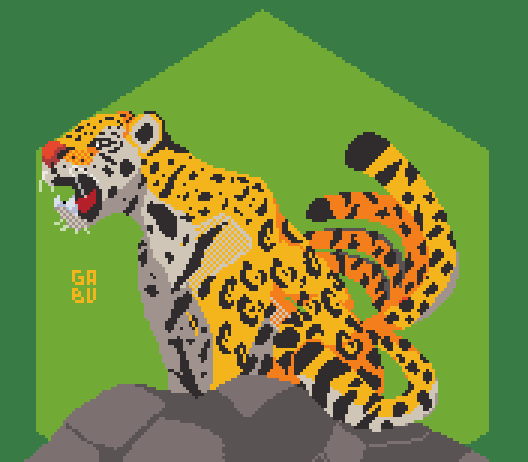
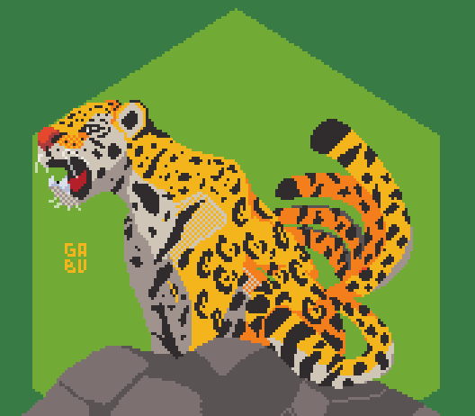
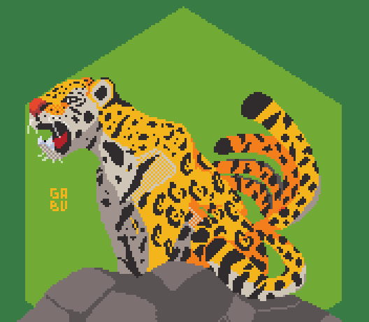
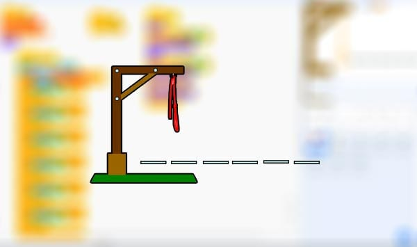
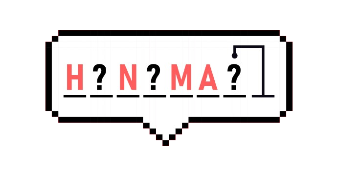
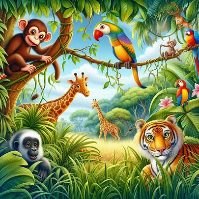
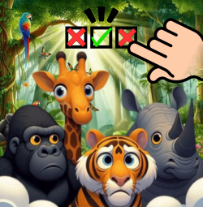

-
Corre hasta donde puedas
En Corre hasta donde puedas, el jugador tendra que conseguir puntos saltando obstaculos, mientras mas puntos tengas mas dificil sera.

-
Ahorcado
En Ahorcado, usando una fila de guiones, se representa la palabra a adivinar, dando el número de letras, números y categoría. Si el jugador adivinador sugiere una letra o número que aparece en la palabra, el otro jugador la escribe en todas sus posiciones correctas. Si la letra o el número sugerido no ocurre en la palabra, el otro jugador saca un elemento de la figura de hombre palo ahorcado como una marca de conteo.
  -
Animal Quiz
En Animal Quiz, según la imagen que aparece, debes elegir el nombre correcto del animal para ganar puntos. Si se contesta mal, se resta un punto. Hay un máximo de 8 puntos en total y el juego está diseñado para evaluar el nivel de conocimiento que se tiene sobre los animales en peligro de extinción. Diferentes finales, para diferentes niveles de conocimiento.
 